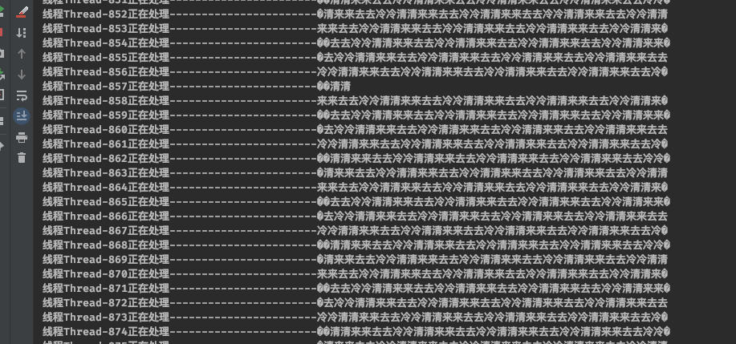
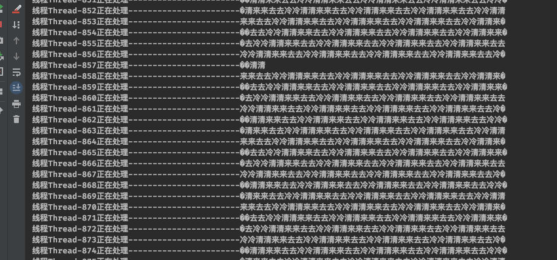
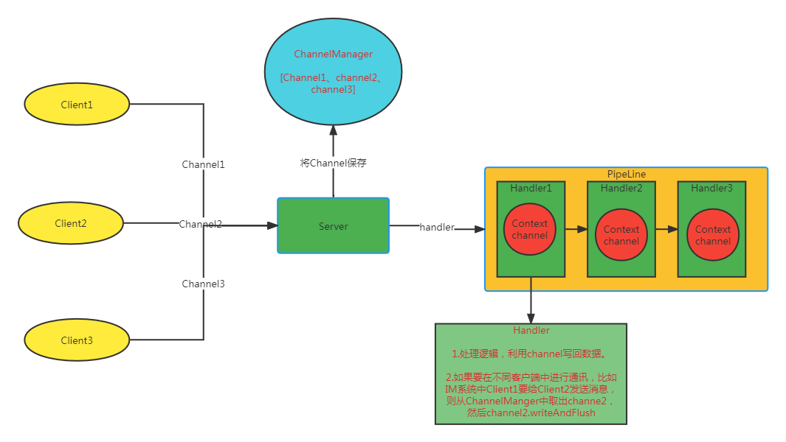

Netty的一些使用
1. 传统的Socket
在机器中数据要进行传输，我们知道，计算机中都是二进制的世界。而二进制加上编码组成了各种各样的文件系统。在同一个机器下，数据的传输用的是数据流。比如Java体系中的字节流、字符流等。而计算机中要进行数据通讯，则要使用到TCP协议了，Socket就是在TCP的基础上做的一个抽象。客户端/服务端建立起连接之后，每个Socket上会有一个输入流和一个输出流，客户端的输出流对应到服务端的输入流。数据以此进行传输。客户端/服务端以此进行数据通讯。
1.1 编码
服务端
package cn.europa;
import java.io.IOException;
import java.io.InputStream;
import java.io.OutputStream;
import java.net.ServerSocket;
import java.net.Socket;
public class Server {
public static void main(String[] args) {
Server server = new Server();
server.start();
}
private void start() {
try {
ServerSocket serverSocket = new ServerSocket(9890);
while (true) {
Socket socket = serverSocket.accept();
Thread thread = new Thread(new Task(socket));
thread.start();
}
} catch (IOException e) {
e.printStackTrace();
}
}
private class Task implements Runnable {
private final Socket socket;
public Task(Socket socket) {
this.socket = socket;
}
@Override
public void run() {
try {
while (!Thread.interrupted()) {
InputStream inputStream = socket.getInputStream();
byte[] buffer = new byte[100];
int length = 100;
StringBuilder stb = new StringBuilder();
while (length == 100) {
length = inputStream.read(buffer);
stb.append(new String(buffer, 0, length));
}
System.out.println(Thread.currentThread().getName() + "线程读取--------------------------:\n" + stb.toString());
OutputStream outputStream = socket.getOutputStream();
outputStream.write("你好".getBytes());
}
} catch (IOException e) {
e.printStackTrace();
}
}
}
}
客户端
package cn.europa.nio;
import java.io.IOException;
import java.io.OutputStream;
import java.net.InetSocketAddress;
import java.net.Socket;
import java.nio.ByteBuffer;
import java.nio.channels.SocketChannel;
import java.util.Scanner;
public class NioClient {
public static void main(String[] args) {
try {
SocketChannel channel = SocketChannel.open(new InetSocketAddress("127.0.0.1", 9999));
channel.configureBlocking(false);
while (!Thread.interrupted()) {
Scanner scanner = new Scanner(System.in);
System.out.println("请输入>>");
while (scanner.hasNext()) {
System.out.println("请输入>>");
String next = scanner.next();
channel.write(ByteBuffer.wrap(next.getBytes()));
}
}
} catch (IOException e) {
e.printStackTrace();
}
}
}
1.2 传统socket总结
如上的代码中，每来一个socket，服务端都需新建一个线程去进行连接，并处理对应的业务逻辑。并且建立连接的过程是阻塞的。效率比较低下。但是好在编程模型简单。
2. 非阻塞式IO
在此基础上，还有一个通常非阻塞模型，他能让服务端在配置为非阻塞的情况下，监听连接以及其他IO操作的时候，能一直轮询，若有数据则进行业务处理，否则线程可以处理自己的事情，避免一直阻塞。
2.1 编码
服务端
package cn.europa.nio;
import java.io.IOException;
import java.net.InetSocketAddress;
import java.nio.ByteBuffer;
import java.nio.channels.ServerSocketChannel;
import java.nio.channels.SocketChannel;
public class NioServer {
public static void main(String[] args) {
try {
ServerSocketChannel server = ServerSocketChannel.open();
server.configureBlocking(false);
server.bind(new InetSocketAddress(9999));
while (true) {
SocketChannel socketChannel = server.accept();
if (socketChannel == null) {
System.out.println("----无建立连接，主线程干别的事情");
try {
Thread.sleep(2000);
} catch (InterruptedException e) {
e.printStackTrace();
}
continue;
}
new Thread(new Task(socketChannel)).start();
}
} catch (IOException e) {
e.printStackTrace();
}
}
private static class Task implements Runnable {
private SocketChannel socketChannel;
public Task(SocketChannel socketChannel) throws IOException {
this.socketChannel = socketChannel;
// 将此channel设置为非阻塞的。
// socketChannel.configureBlocking(false);
}
@Override
public void run() {
while (!Thread.interrupted()) {
ByteBuffer buffer = ByteBuffer.allocate(1024);
try {
int length = 0;
StringBuilder stb = new StringBuilder();
while (length == 0) {
System.out.println(Thread.currentThread().getName() + "正在读取读取。");
length = socketChannel.read(buffer);
stb.append(new String(buffer.array()).trim());
}
System.out.println("线程" + Thread.currentThread().getName() + "读取数据-----------------------------" + stb.toString());
} catch (IOException e) {
e.printStackTrace();
}
}
if (socketChannel != null) {
try {
socketChannel.close();
} catch (IOException e) {
e.printStackTrace();
}
}
}
}
}
3. NIO
NIO的意思在Java中表示的是New IO,而非non-blocking IO。这个io模型其实对应的是IO多路复用模型。 IO多路复用机制的实现是他有一个Selector组件，而Seletor组件对应的实现是各个操作系统上的select函数、epoll函数等。他允许文件句柄的连接、读写等事件都注册到内存中，被这个selector查询出来，从而实现了一个内部线程对所有的io事件进行了分发。减小了客户端、服务端的资源浪费，提升了速率。
3.1 编码
服务端
package cn.europa.reactor;
import java.io.IOException;
import java.net.InetSocketAddress;
import java.nio.ByteBuffer;
import java.nio.channels.SelectionKey;
import java.nio.channels.Selector;
import java.nio.channels.ServerSocketChannel;
import java.nio.channels.SocketChannel;
import java.util.Iterator;
import java.util.Set;
public class RServer {
private static Selector selector;
private static ServerSocketChannel serverChannel;
public static void main(String[] args) {
try {
selector = Selector.open();
serverChannel = ServerSocketChannel.open();
serverChannel.configureBlocking(false);
serverChannel.bind(new InetSocketAddress(9099));
serverChannel.register(selector, SelectionKey.OP_ACCEPT);
while (!Thread.interrupted()) {
selector.select();
Set<SelectionKey> keys = selector.selectedKeys();
Iterator<SelectionKey> keyIt = keys.iterator();
while (keyIt.hasNext()) {
SelectionKey key = keyIt.next();
if (key.isAcceptable()) {
ServerSocketChannel serverSocketChannel = (ServerSocketChannel) key.channel();
SocketChannel channel = serverSocketChannel.accept();
// 1、注册新io事件时一定要判断是否是null并且在null时重试。不然不会注册新事件。
if (channel == null) {
continue;
}
channel.configureBlocking(false);
channel.register(selector, SelectionKey.OP_READ);
}
if (key.isReadable()) {
new Thread(new IOHandler(key)).start();
}
// 2、需要remove掉这个key，nio中这个是累加的，不然下次会再次处理上一个io事件。
keyIt.remove();
}
}
} catch (
IOException e) {
e.printStackTrace();
}
}
private static class IOHandler implements Runnable {
private SelectionKey key;
public IOHandler(SelectionKey key) {
this.key = key;
}
@Override
public void run() {
SocketChannel channel = (SocketChannel) key.channel();
ByteBuffer buffer = ByteBuffer.allocate(100);
int length = 0;
StringBuilder stb = new StringBuilder();
while (length == 0) {
try {
length = channel.read(buffer);
stb.append(new String(buffer.array()).trim());
} catch (IOException e) {
e.printStackTrace();
}
}
System.out.println("线程" + Thread.currentThread().getName() + "正在处理-----------------------" + stb.toString());
}
}
}
客户端
package cn.europa.reactor;
import java.io.IOException;
import java.net.InetSocketAddress;
import java.nio.ByteBuffer;
import java.nio.channels.SocketChannel;
import java.util.Scanner;
public class RClient {
public static void main(String[] args) {
try {
SocketChannel channel = SocketChannel.open(new InetSocketAddress("127.0.0.1", 9099));
channel.configureBlocking(false);
while (!Thread.interrupted()) {
Scanner scanner = new Scanner(System.in);
System.out.println("请输入>>");
while (scanner.hasNext()) {
System.out.println("请输入>>");
String next = scanner.next();
ByteBuffer buffer = ByteBuffer.allocate(100);
for (int i = 0; i < 1000; i++) {
buffer.put(next.getBytes());
// 涉及到了buffer的翻转
buffer.flip();
channel.write(buffer);
buffer.clear();
}
}
}
} catch (IOException e) {
e.printStackTrace();
}
}
}
3.2 问题
可以看到，nio的编程模型并不简单，而且带来的调试十分复杂。并且，nio中有一些bug较为难处理。
3.3 半包问题
运行上面代码，可以看到如下输出，我明明只输入了几个字符，而输出中却输出了一大串(沾包)，有时候还输出了乱码(半包，破碎的数据包)，这些统称为半包问题。
 

4. Netty
4.1 介绍
其实Netty并不复杂，搞懂了他的几个组件后，他的编程模型十分简单，并且功能强大。
4.2 组件
Channel
PipeLine
ChannelHandler
ChannelHandlerContext
4.3 说明
以上几个组件就是编程中最常用的组件了，混个眼熟，然后看下面这张处理流程图。大概就能搞清楚各个组件的作用了。

当然，netty中功能肯定不止这些，比如长连接的实现、怎么解决半包问题、自定义协议、内存零拷贝、各种内置的handler等等。都需要具体去学习，上图只是简单的解析了他的工作原理，仅此而已。